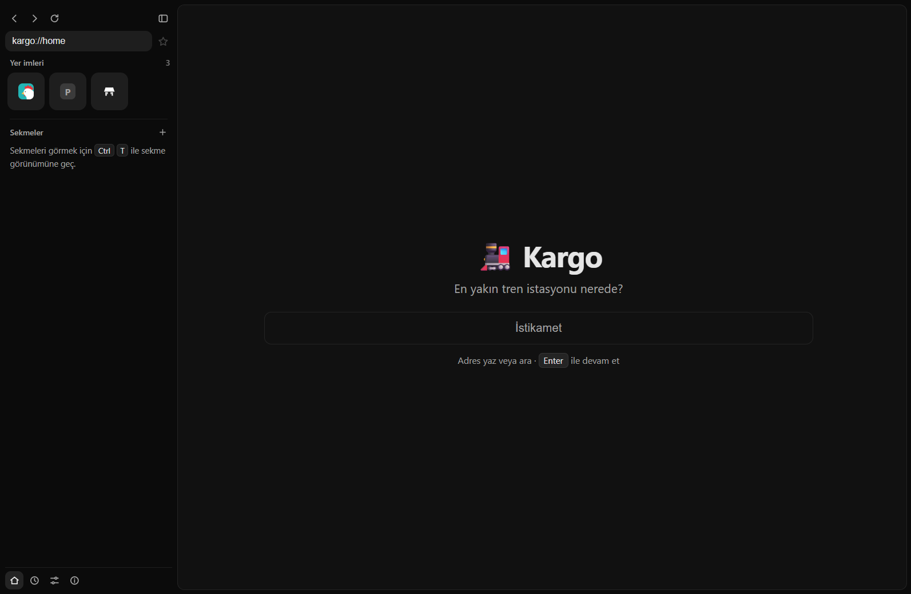

Neredeyse hiç kullanıcı arayüzü olmayan, klavye odaklı bir tarayıcı.
Şimdi İndir
Kargo, internette yaşayan ve fareden nefret eden insanlar için tasarlanmış bir tarayıcıdır. Kargo, sadece birkaç klavye kısayolu kullanılarak kontrol edilebilir. Kargo, bir tarayıcının sadece en kullanışlı özelliklerini içerir; bu sayede internette gezinirken gereksiz özellikler sizi rahatsız edemez. Kargo'yu geliştirdim çünkü tercih ettiğim tarayıcıların (Chrome ve Firefox) sahip olduğu çoğu özelliği kullanmıyordum.
Kargo; Javascript, HTML ve CSS kullanarak modern, platformlar arası masaüstü uygulamaları geliştirmeye yarayan bir teknoloji olan Electron kullanılarak inşa edilmiştir. Kaynak koduna Github üzerinden ulaşılabilir.
target="_blank"
ile açılan bağlantılar ve window.open çağrıları yeni
pencere yerine Kargo sekmesinde açılır. OAuth gibi gerçek pencere
gerektiren akışlar güvenli bir pencerede çalışmaya devam eder.
Bu tablo varsayılan kısayolları gösterir. Kargo'yu ilk kez başlattığında veya ayarları sıfırladığında bu kombinasyonlar geçerli olur.
| Ctrl + T | Yeni sekme aç |
| Ctrl + X | Mevcut sekmeyi kapat |
| Ctrl + Shift + T | Sekme çubuğunu göster/gizle |
| Ctrl + Shift + ← | Önceki sekme |
| Ctrl + Shift + → | Sonraki sekme |
| Ctrl + 1 … 9 | İlgili sekmeye geç |
| Ctrl + ← | Geri git |
| Ctrl + → | İleri git |
| Ctrl + Shift + H | Ana sayfaya git |
| Ctrl + Shift + S | Ayarlar sayfasını aç |
| Ctrl + Shift + A | Hakkında sayfasını aç |
| Ctrl + R / F5 | Sayfayı yenile |
| Ctrl + K | Arama alanına odaklan |
| Ctrl + = | Yakınlaştır |
| Ctrl + - | Uzaklaştır |
| Ctrl + 0 | Yakınlaştırmayı sıfırla |
| Ctrl + M | Pencereyi küçült |
| Ctrl + Shift + M | Pencereyi büyüt |
| Ctrl + Q | Uygulamayı kapat |
Kısayolları Ayarlar → Kısayollar bölümünden
değiştirebilirsin: bir kısayola tıklayıp yeni tuş kombinasyonuna bas.
Esc kaydı iptal eder, ↺ tek kısayolu,
Varsayılanlara dön ise tümünü sıfırlar. Aynı kombinasyonu iki
kısayola vermeye çalışırsan eski sahibi boşa alınır.
Kargo hâlâ geliştirilme aşamasındadır. Hata bildirimleri ve katkılar için GitHub üzerindeki sorun takibini kullanabilirsin.
Kargo'nun fikri cargo projesinden esinlenmiştir. Buharlı lokomotif logosu twemoji tarafından oluşturulmuş olup CC BY 4.0 lisansı altında kullanılmaktadır.